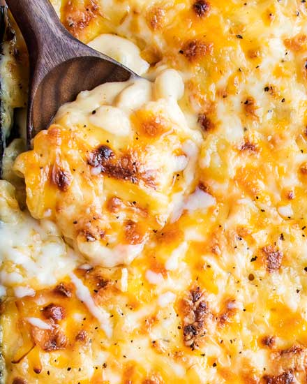

Recipes
Recipe 1: Chocolate Chip Cookies

- Origin: Michigan
- Source: Family Recipe
- Category: Dessert
Recipe Ingredients
- Unsalted butter
- Granulated Sugar
- Packed light or dark brown sugar
- Large egg
- Pure vanilla extract
- Semi-sweet chocolate chunks (melted)
- All-purpose flour
- Natural unsweetened cocoa powder
- Baking soda
- Salt
- Semi-sweet chocolate chunks
Recipe Steps!
- In a mixing bowl cream together the butter, granulated sugar, and brown sugar
- Add the egg and vanilla extract and beat well or until viscous in consistency
- Add the melted chocolate
- In a separate bowl combine the flour, baking soda, cocoa powder and salt
- Combine the wet and dry ingredients
- Add the unmelted chocolate chunks
- Form 15 or so cookies and place on a baking sheet
- Cook for 12 to 13 minutes at 350 degrees
- Enjoy!
Recipe 2: Coca Cola Chicken Wings

- Origin: China
- Source: Family Recipe
- Category: Main Dish
Recipe Ingredients
- Chicken wings
- Scallions
- Ginger slices
- Cooking wine
- Dark soy sauce
- A can of coke
Recipe Steps
- Wash and place chicken wings in a bowl
- Add scallions, ginger slices, cooking wine, dark soy sauce and salt to the washed chicken wings, and mix them well
- Cover the bowl with plastic wrap and marinate the chicken wings for 1 hour
- Put the right amount of oil in the pot, and put the marinated chicken wings into the pot and fry it until golden brown on both sides
- After, fry the chicken wings until golden brown on both sides, then pour a can of coke into the pan and bring to a boil
- Continue to cook for an additional 2-3 minutes until the glaze has thickened and coats the wings nicely
- Transfer the Coca-Cola glazed chicken wings to a serving platter
- Enjoy!
Recipe 3: Zucchini Fritters

- Origin: Unknown
- Source: niftyrecipe.com
- Category: Side dish/main dish
Recipe Ingredients
- Zucchini
- Egg
- Flour
- Vegetable/seed oil
- Garlic
- Salt and pepper
Recipe Steps
- Combine eggs, salt, and pepper and whisk
- Add pressed garlic
- Grate the zucchini and squeeze the moisture out of it
- Add zucchini and flour and mix
- Heat oil in pan and add dollops of batter
- Serve with or without dipping sauce
- Enjoy!
Recipe 4: Spaghetti

- Origin: Italian
- Source: own recipe
- Category: Main Dish
Recipe Ingredients
- Dry spaghetti noodles
- Pasta Sauce
- Grated cheese
Recipe Steps
- In a pan, add the pasta sauce and just enough water to cover the bottom of the pan. Bring the mixture to a boil
- Add the spaghetti noodles to the pan and cook according to the packaging instructions
- Once the noodles are cooked, plate on a pan and add cheese on top
- Enjoy!
Recipe 5: Mac and Cheese
- Origin: Northern Europe
- Source: delish.com mac & cheese recipe
- Category: Main Dish.
Recipe Ingredients
- Macaroni
- Butter and flour
- Milk
- Cheese
- Seasonings
- Bread crumbs
Recipe Steps
- Preheat oven to 375°. Grease a 13"x9" baking dish with butter. In a large pot of boiling salted water, cook macaroni, stirring occasionally, until al dente, 5 to 6 minutes. Drain
- In a large saucepan over medium heat, melt 1 stick butter. Sprinkle flour over and cook, stirring, until slightly golden, 2 to 3 minutes. Pour in milk and whisk until combined. Add mustard powder; season with salt and pepper. Bring to a simmer over medium-high heat and cook, stirring, until sauce starts to thicken, about 2 minutes
- Remove pan from heat and whisk in cheddar, Gruyère, and 1 cup Parmesan until melted and smooth. Stir in macaroni and transfer to the prepared dish
- In a small bowl, combine panko, oil, and remaining 1/2 cup Parmesan. Sprinkle over macaroni; season with more pepper
- Bake mac and cheese until bubbly and golden, 25 to 30 minutes. Let cool for 10 minutes
- Enjoy!
Date
00
:
00